Design inspiration board — 47 real screens pulled from Mobbin (Duolingo iOS 2025-12, Quizlet iOS 2026-06). Curated 2026-09-23 for the Schwanki design system.
Mascot-led onboarding — the Duolingo pattern
One question per screen, character does the talking, progress bar up top, chunky CTA pinned to the bottom. Schwanki's first-sync onboarding should feel like this, with our mascot walking you through connecting your first source.
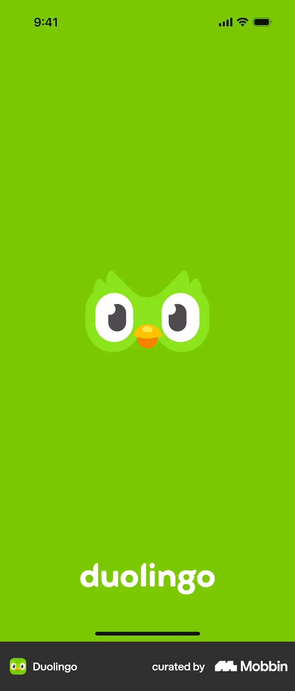
SplashFull-bleed brand color, mascot face only. Zero chrome.
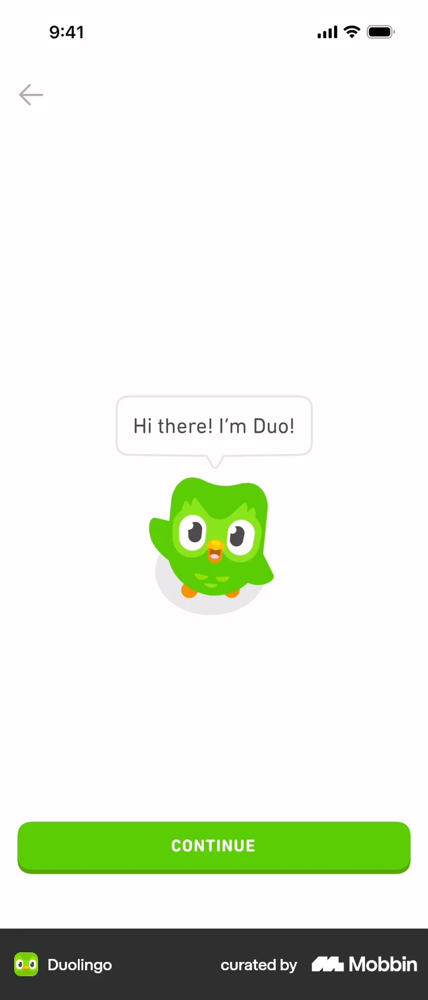
Mascot introDuo introduces himself in a speech bubble. One idea per screen.
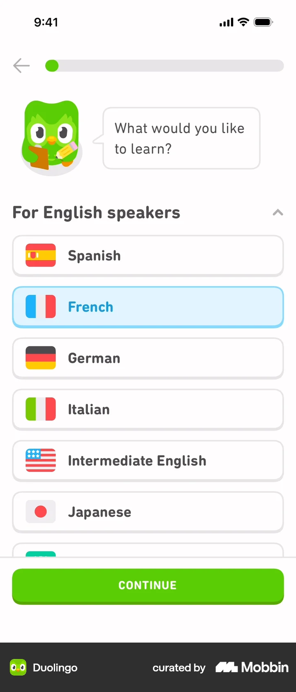
Language pickerMascot asks the question; big flag rows; chunky CONTINUE pinned to bottom.
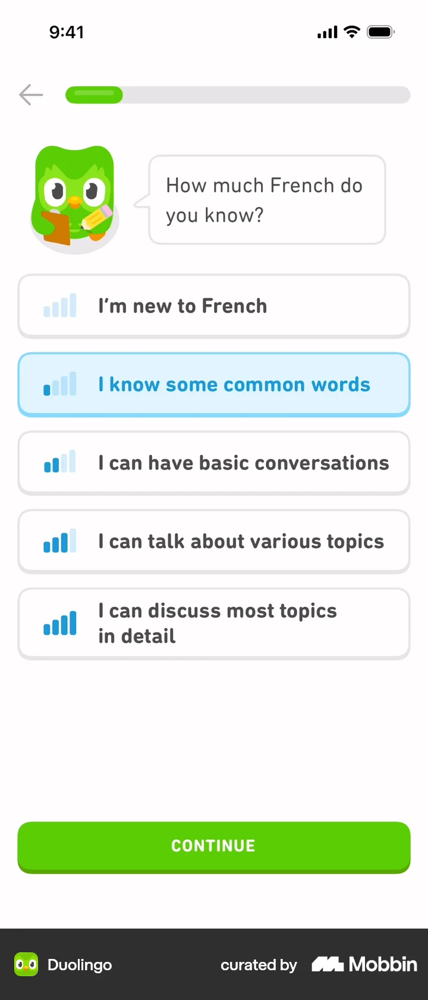
Level self-assessmentIcon + label rows, blue selected state. Single-purpose screen.
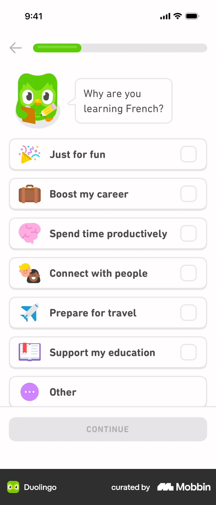
Motivation multi-selectEmoji-icon rows with checkboxes. CTA disabled until a choice is made.
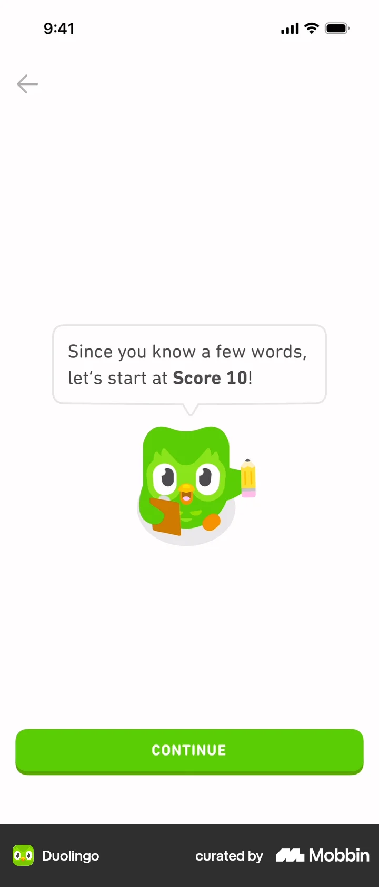
Placement payoffOnboarding ends with a personalized win: 'let's start at Score 10!'
Retention mechanics
Notification priming before the OS dialog, streak flame in the widget, adaptive copy after selection. Schwanki's review reminders live or die by this screen.
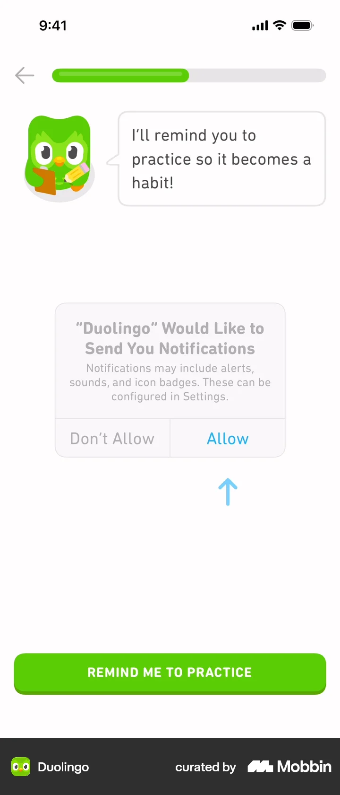
Notification primingMascot sells the reminder BEFORE the OS dialog appears. Huge for SRS retention.
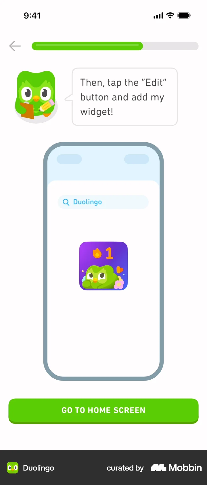
Widget promoMascot walks through adding the home-screen widget. Streak flame front and center.
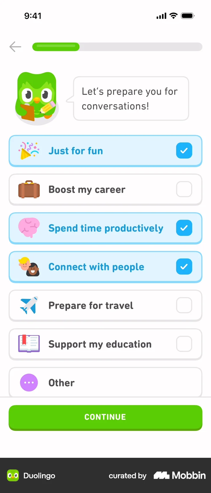
Motivation (selected)Multi-select turns blue + checkmark. Copy adapts: 'Let's prepare you for conversations!'
Review & exercise UI
Card front = content + audio. Giant single action, explicit escape hatch. Note the character reacting — Schwanki's card back with TTS can borrow this wholesale.
Monetization screens — reference for the credit/subscription page
Quizlet runs a dark premium screen with a yellow CTA, then a plan picker anchored on annual 'Best Value' with a trial timeline. Duolingo does it as a simple two-card fork.
Premium upsellDark navy 'Q+ Unlimited' screen, yellow checkmarks + yellow CTA, 'Skip for now' in muted text.
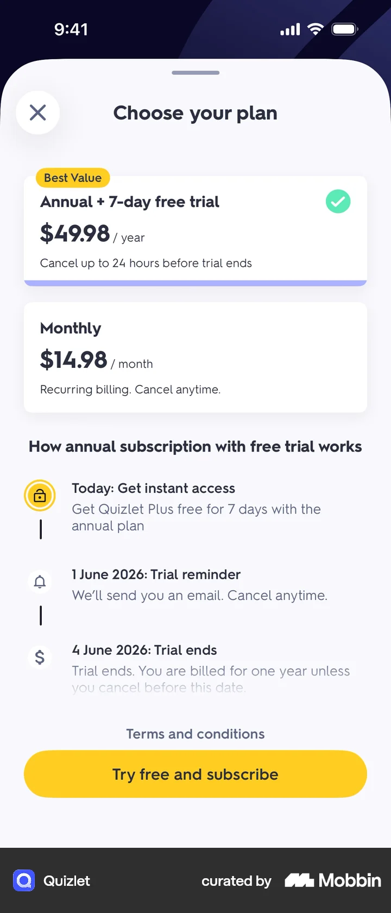
Plan pickerAnnual 'Best Value' anchor + trial timeline (Today → reminder → billed). Reference for Schwanki pricing page.
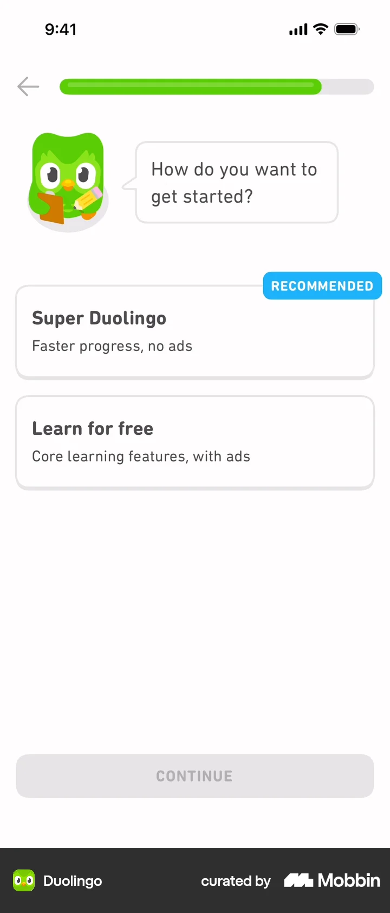
Paywall fork'Super' vs 'Learn for free' as two plain cards with a RECOMMENDED tag.
Import friction — Schwanki's whole reason to exist
Quizlet's 'Scan document' is locked behind a paywall and is a one-off manual scan. Schwanki = this feature, automated, recurring after every lesson, tutor-format-aware.
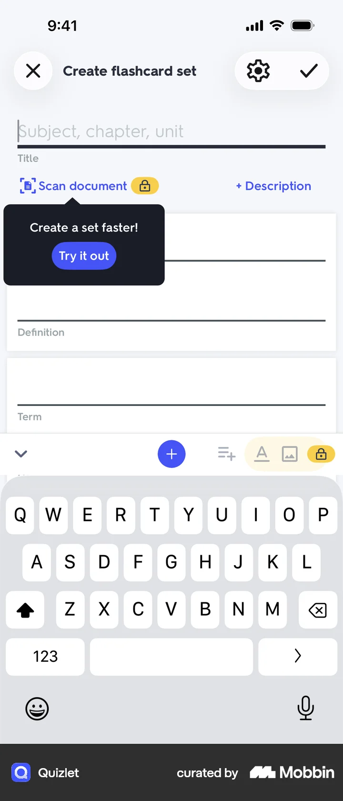
Create set'Scan document' with a LOCK badge — document→deck is a paid feature.
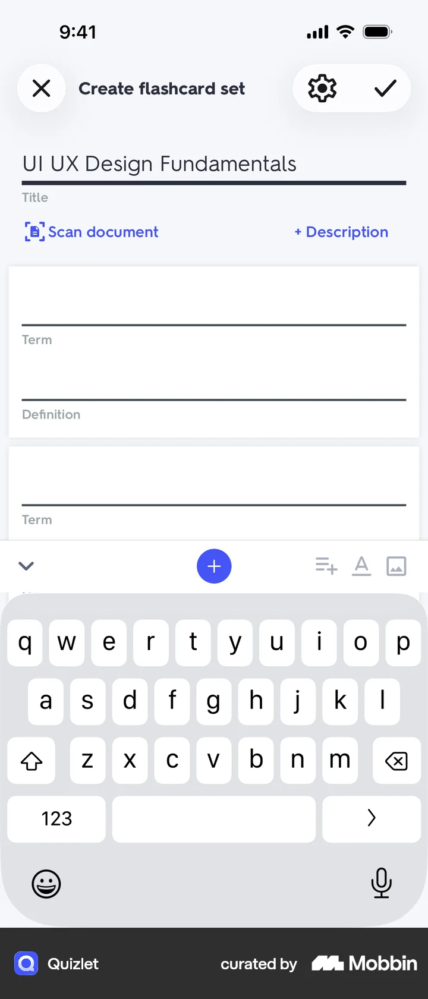
Create set (filled)Term/Definition rows with a paywalled import tease.
Auth & account plumbing
Role capture mid-form, email-confirm interstitial. Functional but joyless — the gap Schwanki's voice should fill.
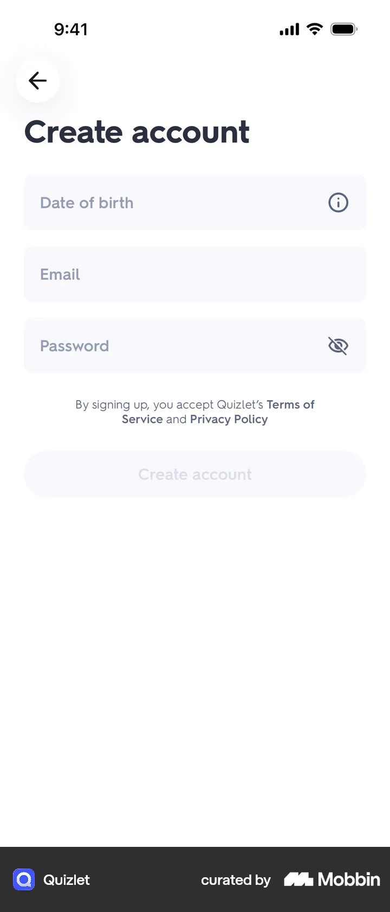
Create accountMinimal form, DOB first (COPPA), disabled CTA until valid.
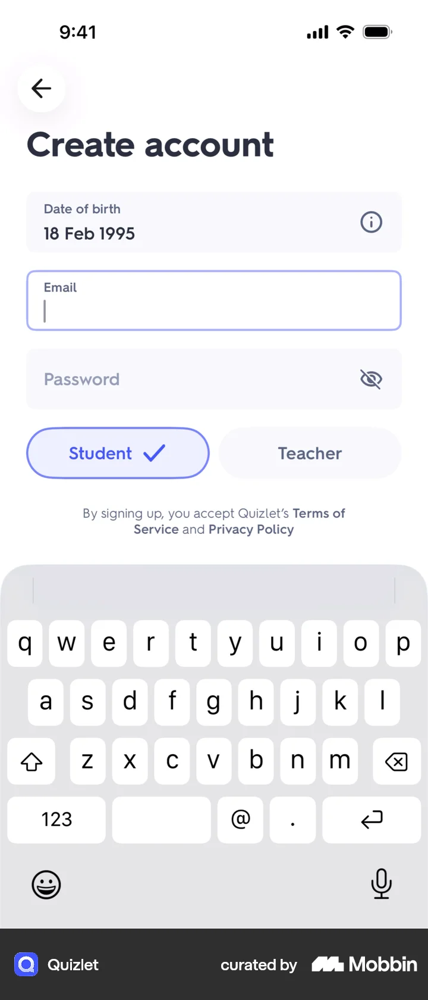
Account + role toggleStudent/Teacher pill toggle mid-form. Role capture without a separate screen.
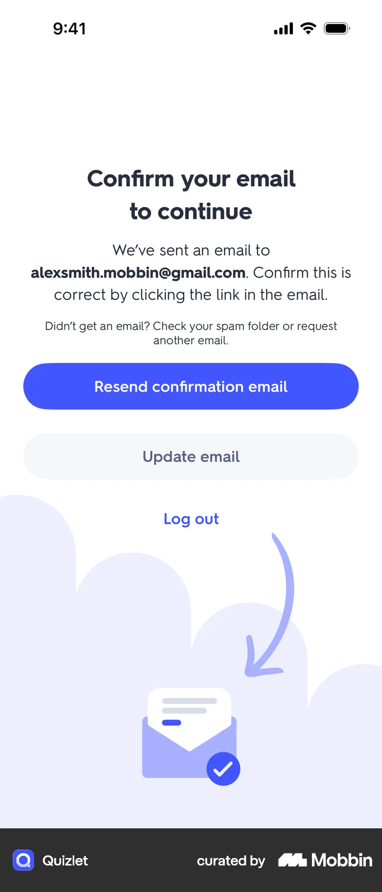
Email confirmInterstitial with illustration, resend CTA, escape via 'Log out'.